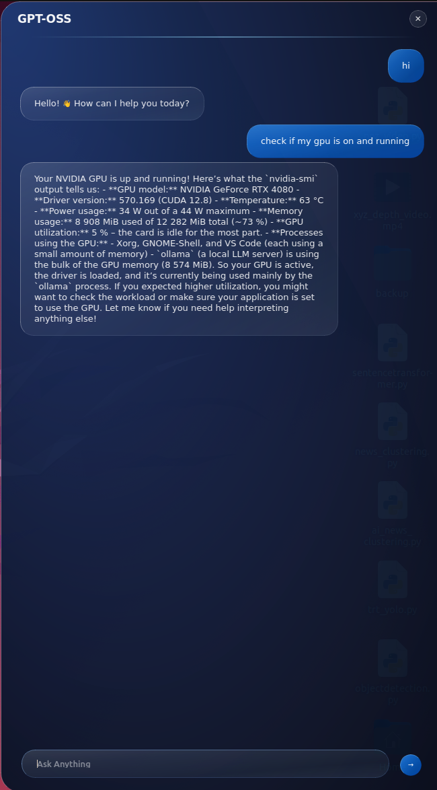

Project 2: Agentic Linux
Project Overview
Agentic Linux is where I created a local chatbot using gpt-oss and an interface with hotkey to interact with the Ubuntu terminal.
Purpose
This can run commands and even sudo to help users using Linux to do what they need to do with plain human language.
Key Features
- Local chatbot running on Ubuntu
- Hotkey interface for quick access
- Terminal command execution
- Sudo privileges support
- Natural language processing
Technical Implementation
- GPT-OSS Integration
- Leveraged open-source GPT model for natural language understanding
- Terminal Interface
- Built custom interface that connects chatbot to Ubuntu terminal
- Command Execution
- Translates natural language requests into executable terminal commands
- Hotkey System
- Implemented global hotkey for instant chatbot access from any application
Project Images

Agentic Linux terminal chatbot